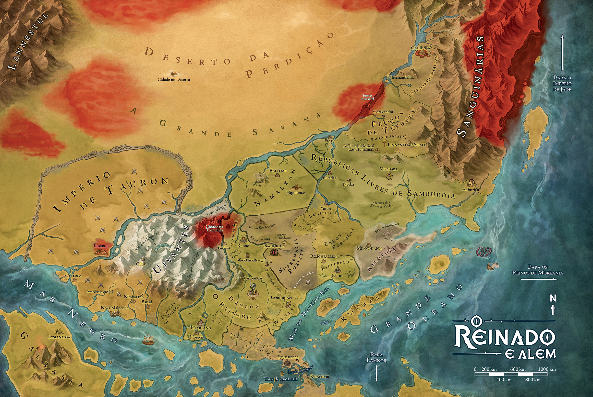

Arton é um continente, mas também um mundo — tão vasto e inexplorado que quase nada além dos oceanos realmente importa. Forjado pelo poder de vinte divindades maiores, soberanas. É o centro de seu universo, o centro de toda a Criação. O sol, a lua e as demais moradas dos deuses orbitam a seu redor, em meio à vastidão planar do Nada e do Vazio.
Fundado por uma caravana de refugiados das terras distantes de Lamnor, por mais que seja o centro de igualdade e progresso, o reinado ainda contem muitas ameaças em suas cidades e ermos, mas é governado por regentes que buscam (pelo menos em teoria), o melhor para seu povo. Além das fornteiras d Reinado, não tem garantia que nobres, exercito e países inteiros não se voltem contra os inocentes. O reinado não e tão seguro por ser muito grande. Praticamente quase todos os aventureiros são naturais de algum lugar do reinado. Embora cada nação do Reinado tenha sua autonomia, todas respondem a uma autoridade maior: a Rainha-Imperatriz Shivara, a maior heroína do mundo, líder dos povos livres. A aliança entre os reinos garante relativa paz, mas isso hoje em dia é questionável. Há poucos anos, a Guerra Artoniana devastou o Reinado, causando o rompimento de antigas alianças. Lady Shivara muitas vezes reúne grupos de aventureiros em missões diplomáticas para fortificar as alianças ou lidar com algum perigo que ameace os reinos sob sua proteção. O atual e fragilizado Reinado de Arton contém apenas sete países. Estes reinos formam o último bastião de justiça e proteção mútua em um mundo cada vez mais assolado pelo mal. Deheon Com sua vasta fronteira circular — delimitada no ponto onde os clérigos de Valkaria perdiam seus poderes, antes da Libertação da deusa —, o Reino Capital tem sido visto como um reduto de normalidade tranquila em meio ao caos geopolítico, um lugar onde as coisas ainda são como deveriam ser. De população humana, mas aberta e convidativa a quaisquer outras raças. Nobres guerreiros em seus castelos, protegendo os camponeses à volta. Rotas comerciais bem patrulhadas, seguras, pelo menos até onde a imensidão do país permite. Cidades ainda em reconstrução, ainda curando as feridas da guerra, mas cheias de determinação, otimismo e confiança em um futuro melhor.
A maior metrópole de Arton não é apenas uma cidade — mas o centro do universo. É a capital política do Reinado, o marco zero do mundo civilizado. É onde está a Deusa. A Líder dos Deuses. Bielefeld - Reino dos Cavaleiros Embora Deheon seja o primeiro e último bastião da humanidade, não há nação mais devotada à luta contra o mal que Bielefeld. Lar da Ordem da Luz, há séculos o país vem treinando e ordenando os mais prestigiados cavaleiros e paladinos de Arton, verdadeiros campeões do Reinado. Foi Bielefeld quem primeiro ergueu seu aço contra as forças de Von Krauser, travando contra seus exércitos as mais violentas batalhas na Guerra Artoniana. Mesmo nos dias de hoje, enquanto tenta restaurar suas fileiras, os cavaleiros ainda combatem os puristas na turbulenta Conflagração do Aço, a zona em conflito que existe nas fronteiras entre Bielefeld, Wynlla e as terras da Supremacia.
Em Arton, conjuradores são prestigiados, respeitados e invejados — e nenhuma nação representa esse costume melhor que Wynlla. Fundado por arcanistas e governado por uma austera magocracia, este reino de cidades opulentas e torres altíssimas goza de posição privilegiada no Reinado, com sua economia baseada na restrita e lucrativa exportação de itens mágicos. Mas nem tudo em Wynlla é exatamente “mágico” o abismo social entre arcanos e mundanos é chocante — aqueles incapazes de usar magia são considerados ralé, sem acesso aos pontos mais prósperos do reino.
Neste reino pastoril de extensas planícies e distâncias imensuráveis, homem e cavalo são como irmãos. Rústicos e honrados, os namalkahnianos descendem de colonos e bárbaros nativos. Aqui cavalos são considerados sagrados, cultuados como presentes dos deuses — ainda que cumprindo seu papel tradicional como companheiros dos seres humanos. Não existem em Arton cavalos mais rápidos ou inteligentes que os de Namalkah. Cada criança, aos seis anos, é presenteada com um cavalo, tornando-se responsável por ele como pai e filho. Diz-se que um nativo deste reino consegue até falar a língua desses animais.
Esta nação foi fundada por três grandes famílias nobres, ambiciosas e sobretudo rivais — Rigaud, Schwolld e Vorlat. Batalhas sangrentas foram travadas entre seus soldados, até que um acordo de paz foi assinado pelos patriarcas, formando uma aliança. As hostilidades seriam mesmo encerradas, mas não exatamente como se esperava durante o baile de máscaras que celebraria a tríplice coroação, dois regentes foram traiçoeiramente assassinados pelo terceiro, que então tomou o poder total. Assim nascia Ahlen, onde se aprende desde o berço que este mundo pertence aos astutos. Onde honra e honestidade não passam de disfarces, onde as leis valem apenas para os tolos que se deixam apanhar por elas.
Longos anos atrás, após um encontro fortuito entre colonos humanos e um clã de anões, estes ofereceram aos recém-chegados um presente de boas-vindas — o lendário machado de Zakharov. Sob essa poderosa influência da cultura anã, surgiu uma nação devotada às armas e armaduras, que passaria a forjar e exportar peças cobiçadas por cada guerreiro de Arton. Os anões eventualmente partiram, convocados pelo Chamado às Armas os humanos seguiriam honrando sua arte e tradições, pelo menos por algum tempo. Após a brutalidade da Guerra Artoniana, este povo vem abandonando a antiga visão artística, romântica, e adotando tradições mais militares. Hoje tratam as armas como aquilo que realmente são: instrumentos de guerra e morte.
O menor e mais misterioso dos reinos é encravado em densa floresta, povoado por sílfides, dríades, ninfas e outros seres mágicos. Embora seja considerado parte do Reinado, essa aliança talvez seja apenas mais um capricho temporário de sua Rainha, ela própria cercada de lendas e mistérios. O país não tem fronteiras claras, sequer pode ser encontrado por meios normais para entrar na Pondsmânia você talvez precise de uma bandeirola azul, uma canção élfica, uma escama de dragão, uma marca de nascença em forma de margarida... Existem regras, mas mudam o tempo todo.
Era uma vez, mais de quinhentos anos atrás, um jovem mago. Ele viveu aventuras, correu perigos, viu companheiros caírem. Descobriu novos feitiços em pergaminhos ancestrais, saqueando tumbas e derrotando bruxos. Um dia encontrou Wynna, a Deusa da Magia. Apaixonou-se por ambas: pela deusa e pela magia. Ficaria conhecido como Talude, Mestre Máximo da Magia. Não apenas um dos mais poderosos arcanistas na existência, mas também favorito da própria Wynna. Após uma vida de missões a serviço da deusa, enfim seria recompensado com a eternidade ao lado dela — o privilégio final sonhado por todos os devotos. No entanto, respeitosamente, Talude declinou.Pediu à deusa para continuar promovendo sua obra, continuar espalhando sua dádiva maravilhosa por toda Arton. Sonhava que todo ser vivo pudesse ser tocado pelo milagre da magia. Sonhava que todo aspirante a mago pudesse aprimorar sua arte sem a necessidade de explorar ruínas perigosas ou contatar entidades sobrenaturais malignas.
Vectora. Uma das mais extraordinárias realizações urbanas no universo. Uma cidade mercantil voadora que visita o Reinado de ponta a ponta, percorrendo talvez a rota comercial mais importante de Arton. Assentada sobre a base de uma montanha invertida, a inacreditável estrutura paira centenas de metros acima dos reinos, placidamente levitando rumo à próxima cidade — onde vai atracar durante alguns dias, permitindo a visitação. Quando o Mercado nas Nuvens chega, fortunas trocam de mãos.
Em meio a tantos seres monstruosos que aterrorizam Arton, existe uma ameaça humana. Extremamente humana, no pior sentido. Nascidos como uma facção fanática em um país militarizado, os puristas são movidos por profunda intolerância racial contra anões, elfos, qareen — enfim, todas as raças não humanas, caçando-as sem clemência. Em sua cruzada de ódio, tramaram um golpe político e tomaram o controle do país, tornando-se uma das maiores forças armadas no mundo. Por fim, avançaram sobre o próprio Reinado, travando uma guerra sangrenta que mudou a face de Arton, a Conflagração do Aço – Guerra Artoniana.
No passado havia um reino conhecido por suas severas leis contra a prática de magia. Arcanistas eram caçados como os piores demônios, grimórios e outros itens mágicos eram confiscados pela coroa, o próprio povo era ensinado a temer e odiar magos. Era o Reino da Magia Proibida. No fim, contudo, tudo se revelaria como um plano sinistro de seu regente, o Conde Ferren Asloth — ele próprio, secretamente, um arcano muito poderoso. Ao longo de décadas, reunindo o poder e conhecimento de tantos arcanistas capturados, ele enfim completaria o ritual necessário para a transformação em lich — o mais poderoso dos mortos-vivos. E sua nação seria renomeada Aslothia, o Reino dos Mortos.
Nem todas as nações de Arton são exatamente reinos. Sambúrdia, conhecido como “o Celeiro de Arton”, sempre foi um dos países mais ricos do mundo, graças a suas terras férteis e às fazendas que abasteciam boa parte do continente. Contudo, durante a guerra contra os puristas, Sambúrdia se desligou do Reinado. Englobou nações vizinhas e se tornou um conglomerado de repúblicas mercantis. Em Sambúrdia o ouro decide tudo.
Ao norte do Reinado, após as Repúblicas Livres, encravados entre as Montanhas Sanguinárias, o reino do Dragão e a área de Tormenta de Lorde Gatzvalith, ficam os feudos de Trebuck. Uma miríade de baronatos, condados e ducados, cada um governado por um nobre diferente e sem nenhum tipo de autoridade maior, os feudos são uma terra livre, mas desunida.
O mais poderoso dragão vivo assumiu uma nação inteira como seu covil pessoal, O Dragão Rei Sckhar, onde é louvado como uma divindade. Sua prole é numerosa, meios-dragões ocupando cargos de comando em suas cidades. E seu tesouro é incalculável, escondido em palácios e fortalezas por toda a extensão do reino. Alguns aventureiros são loucos o bastante para tentar invadir seus cofres secretos e roubar suas riquezas, mas ninguém é louco o bastante para enfrentá-lo frente a frente.
Erguendo-se por grande parte da face leste do continente, alongando-se muito além das terras pisadas por mortais, as Montanhas Sanguinárias são um mundo à parte — um mundo maior que Arton, juram os exploradores. Fácil acreditar nisso basta observá-las avultando ao longe, muito longe, visíveis ainda a dias de viagem. Muralha de presas afiadas, ferozes, intimidando o próprio céu, como as mandíbulas serrilhadas do Deus dos Monstros que aqui reina.
Uma vasta cadeia de montanhas geladas, cercando extensos vales em glaciação eterna. Picos de brancura inacreditável, planícies varridas por nevascas, imensas cavernas congeladas. Em qualquer mundo sensato e obediente às leis universais, uma região como está só poderia ser encontrada a meses de viagem, às margens do mundo conhecido.
Antigamente havia a União Púrpura, uma série de pequenos reinos independentes habitados pelas antigas tribos “bárbaras” que já estavam no continente antes da chegada dos exilados do sul, considerada uma unidade política pelos outros reinos. Isso era uma imposição artificial dos reinos “civilizados”. Os povos da região sempre consideraram que se unir em um só era abrir mão de sua identidade, matar um pouco sua própria alma. Então, com o caos resultante da Guerra Artoniana, cada tribo declarou sua independência. Não existe mais União Púrpura.
No oeste de Arton, os minotauros ergueram a maior nação do mundo conhecido. Com uma cultura baseada nos dogmas de Tauron, o Deus da Força — o forte deve proteger o fraco, o fraco deve obedecer ao forte — o estado táurico conquistou territórios, abriu estradas, ergueu cidades. Estabeleceu uma sociedade segura, mas autoritária. Próspera, mas desigual. Poderosa, mas escravocrata.
Malpetrim poderia ser mais uma entre tantas cidades na costa do Mar Negro, ao longo do litoral sudoeste de Arton. No entanto — por sua posição geográfica, alta concentração de aventureiros, ou simples capricho dos deuses — o lugar acabou se tornando palco para mais eventos extraordinários que talvez qualquer outro ponto de Arton.
Muitas vilas, aldeias e cidadezinhas de Arton são parecidas, mas nunca haverá duas iguais. Em algumas, as diferenças são pequenas, sutis. Em outras, explodem na sua cara como um tiro de pólvora. Este é o caso de Smokestone. Esta cidade pequena, mas próspera, tem quase toda a sua economia baseada na mineração de pedra-de-fumaça — o minério amaldiçoado que dizem ter sido criado por demônios, utilizado na fabricação de pólvora. Assim, ao longo dos anos, a cidade acabou se tornando reduto de armeiros, inventores, pistoleiros, assassinos, caça-recompensas, durões das planícies... enfim, todos que lidam com as infames armas de pólvora. Não há lugar mais indicado para encontrar os melhores forjadores de pistolas e mosquetes, os melhores alquimistas de explosivos, os atiradores mais mortais de Arton. Isto é, se você conseguir encontrar o maldito lugar primeiro.
Tyrondir já foi “o Reino da Fronteira”, servindo como barreira contra os goblinoides. As vilas no limite do reino eram ponto de partida para aventureiros que caçavam essas criaturas, fortalezas abrigavam centenas de soldados prontos para defender a civilização. Mas Tyrondir ignorava que havia uma outra civilização ao sul e que os goblinoides não eram apenas monstros.
Uma das poucas cidades poupadas dos fragmentos do meteoro foi Sternachten, lar de uma ordem de estudiosos e clérigos de Thyatis, os astrólogos. Talvez o próprio deus tenha intercedido em seu favor, mas não foi capaz de proteger a cidade quando ela foi atacada por um grupo de vilões. Sternachten foi massacrada e muito danificada, mas pelo menos não foi reduzida a pó.
O Istmo de Hangpharstyth, que ligava os dois continentes, foi quase todo destruído. Canais foram abertos com a queda do meteoro, permitindo a circulação de navios. Existem algumas passagens por terra, mas são poucas e temporárias, estreitas e traiçoeiras, conhecidas por poucos. Para chegar de um continente a outro, é preciso enfrentar o mar e a Ossada de Ragnar. Contudo, apenas os mais habilidosos e ousados marinheiros se aventuram por aqui. Imensos pilares de rocha emergem do mar, como se realmente fossem costelas de um deus.
Este reino de intelectuais independentes e iconoclastas não acredita nos deuses. Os poucos salistienses que reconhecem a existência de entidades divinas simplesmente acham que são espíritos mágicos de grande poder. Os deuses também parecem não acreditar muito em Salistick. A magia divina não funciona direito aqui — às vezes o que deveria ser um milagre impressionante mais parece um truque de salão, outras vezes as preces de um devoto simplesmente não são atendidas.
Séculos atrás, o reino que veio a se tornar a Supremacia Purista deu seus primeiros passos no caminho da conquista implacável, anexando à força os pequenos reinos de Svalas e Kor Kovith. Contudo, ambos mantiveram sua antiga cultura. E, antes mesmo do início da Guerra Purista, a Supremacia teve o primeiro sinal de derrota quando Svalas declarou independência. Para manter sua individualidade e se proteger, Svalas abraçou os modos antigos e parou no tempo: é agrícola e fortemente tradicionalista, mantido por laços de soberania e vassalagem. Nobres protegem e lideram o povo, enquanto plebeus trabalham para alimentar todos e burgueses ricos são raríssimos. Quase todo aventureiro nasceu em um castelo ou pelo menos foi recrutado em um. Contudo, o modo de vida de Svalas não permaneceu inalterado. Graças ao contato com o reino conquistador, adquiriu forte viés marcial.
Nascido na antiga nação de Hongari, desde cedo Rodleck Leverick demonstrava ser diferente dos outros hynne. Era inteligente, curioso, apaixonado por charadas e quebra-cabeças. Sonhava ser mais esperto que os mais espertos — ambição que o conduziria ao inevitável sacerdócio de Hyninn, Deus dos Ladrões. Seguiria elaborando enigmas e armadilhas cada vez mais desafiadores, derrotando tanto os colegas de clero quanto grupos de aventureiros. Sua infâmia enfim chegaria até Lorde Filthen, um nobre rico e entediado, que decidiu convidá-lo para um projeto audacioso: construir o labirinto mais mortal de toda Arton, para seu puro entretenimento.
A Montanha de Ferro. Elevação majestosa diante das gélidas uivantes, riquíssima em jazidas deste metal e outros minérios valiosos. Por longos anos acreditou-se abrigar o reino secreto dos anões fazia sentido que um povo de ferreiros excepcionais vivesse onde metais fossem abundantes. Mas a verdade era mais profunda, figurativa e literalmente. A montanha apenas esconde uma das maiores passagens até Doherimm, vasto território subterrâneo, talvez se estendendo por todo o continente.
“Os três cantos de Arton.” Expressão popular, antiga, trazendo confusão a qualquer pessoa diante de um bom mapa que cantos seriam esses? Estudiosos suspeitam que o verdadeiro sentido se perdeu com o tempo. Na verdade, a frase provavelmente se refere aos três grandes mares à volta do continente. Todos perigosos, cada um a seu modo. O Mar Negro, O Mar do Drgão Rei e o Mar dos Monstros.
Khubar tem uma cultura exótica, que seguiu um caminho diverso dos povos do continente. As casas são rústicas, simples cabanas de palha, bambu, folhas e troncos de palmeira. O clima é quente, com chuvas fortes. A montaria mais comum é o tumarkhân, um enorme e dócil lagarto herbívoro. O povo, de pele morena-acinzentada, tem o costume de tatuar metade do corpo com padrões fluidos e variados. Dizem que esses desenhos servem para representar a dualidade do ser humano, que nasce com potencial para o bem e para o mal.
Além da costa continental sudoeste, além do perigoso Mar Negro, existe Galrasia. Vasta ilha tropical, de selva quente e úmida, que dizem ter sido arrancada do próprio mundo de Lena — onde toda a vida jorra farta, infindável, incontrolável. As árvores crescem em troncos grossos como estradas, alcançam e escondem os céus, contorcem-se em paisagens sinuosas, labirínticas. As águas galopam em rios ferozes, de corredeiras e cascatas estrondosas. Os pântanos borbulham densos, pegajosos, mais ruidosos e inquietos que qualquer pântano tem o direito de ser. As matas mergulham até as profundezas da terra, onde nenhum sol alcança, ainda assim exibindo folhagem exuberante, vigorosa, cálida. Um inferno verde.
Lamnor, o continente sul, foi palco do conflito entre elfos e goblinoides por muitas gerações. Então Thwor Ironfist uniu todas as raças goblinoides, derrotou os elfos e devastou Lenórienn, seu reino. Deu cabo de todos os reinos humanos do continente, erguendo-se como o Ayrrak, o Imperador Supremo de Lamnor. Seu povo passou a ser chamado duyshidakk. Décadas depois, a profecia que avisava sobre a morte de Thwor se cumpriu. Com a queda da Flecha de Fogo, o líder morreu e ascendeu como deus. Seu império agora está dividido.
Construída originalmente como uma cidade-fortaleza para proteger o sul contra o norte selvagem, depois passando a proteger o norte contra o sul, hoje Khalifor nada protege. É o maior antro do lado macabro e sinistro dos goblinoides.
Quando o reino élfico caiu, sua capital foi tomada e se transformou para sempre. O que antes era Lenórienn passou a ser Rarnaakk, onde a violência e a brutalidade imperam. Ainda há restos de criações élficas — torres e pontes delicadas de cristal, palácios vivos misturados a árvores, obras de arte que se mesclam com cachoeiras... Mas tudo vandalizado, arruinado, sujo e desfigurado. Ossadas élficas e cadáveres empalhados podem ser vistos por toda a cidade.
A maior cidade dos goblinoides, Urkk thran parece uma vasta cordilheira que muda de forma o tempo todo, rearranjando-se e se renovando a cada instante. O maior orgulho da civilização duyshidakk, Urkk thran foi erguida em um vale que não tinha sido maculado por construções humanas ou élficas.
Ilha de Tamu-ra. Lar de uma civilização ancestral. Terra de samurais, monges e ninjas, de artes milenares e culto sagrado à honra. Seu povo, resiliente e determinado como nenhum outro, enfrentou o pior que Arton podia oferecer — das sangrentas guerras civis aos inclementes terremotos, tufões e ataques de monstros gigantescos. Até a chegada de algo poderoso e terrível demais, que o mundo desconhecia até então. O primeiro e mais destruidor ataque da Tormenta.
Houve época em que não havia seres humanos na Ilha Nobre, não havia sequer seres inteligentes para lhe dar esse nome. Seus únicos habitantes eram os animais, selvagens e puros, vivendo conforme as leis de Allihanna — aqui reverenciada como a Dama Altiva. Seria assim até a chegada dos darash, povo humano de ciência profana e cobiça sem limites. Multiplicaram-se como pragas, alastrando suas cidades de metal, seu horrendo Reino das Torres. Em seu progresso, devoraram a mata macia, envenenaram rios e mares, escureceram o próprio céu.
Quando o grupo de aventureiros conhecido como o Esquadrão do Inferno entrou em contato com o arauto de um povo estrangeiro, inadvertidamente libertou sobre Arton a maior de todas as ameaças. A Tormenta choveu sangue ácido e demônios sobre Tamu-ra, destruindo uma civilização milenar. Esses invasores são chamados lefeu, ou demônios da Tormenta, seres tão bizarros, tão macabros, que só conseguimos vê-los como insetos monstruosos — os limites daquilo que a inteligência racional consegue reconhecer ou imaginar. Depois do ataque a Tamu-ra surgiram outras áreas de Tormenta, lugares de profanação e pesadelo, onde nosso próprio mundo é devorado, substituído pela Anticriação aberrante. No final, tudo será lefeu.
O povo mais numeroso em Arton, humanos são considerados os escolhidos dos deuses, aqueles que governam o mundo. Em sua variedade e adaptabilidade, são encontrados em quase todos os pontos do continente — dos vales férteis do Reinado às vastidões áridas do Deserto da Perdição. São exploradores e desbravadores ambiciosos, sempre buscando algo além.
Anões são o mais resiliente dos povos. Em suas cidadelas subterrâneas, trabalham duro escavando minas e forjando metal em belas armas, armaduras e joias. São honestos e determinados, honrando a família e a tradição. Apesar de sua profunda paixão por forja e cerveja, pouca coisa é mais preciosa para um anão que cultivar uma barba longa e orgulhosa.
Parte humanas, parte fadas, as dahllan são uma raça de mulheres com a seiva de árvores correndo nas veias. Falam com os animais, controlam as plantas — mas também são ferozes em batalha, retorcendo madeira para formar armaduras.
Elfos são seres feitos para a beleza e para a guerra, tão habilidosos com magia quanto com espadas e arcos. Elegantes, astutos, de vidas quase eternas, parecem superiores aos humanos em tudo. Poderiam ter governado toda Arton, não fosse a arrogância herdada de sua deusa. Com a queda de Glórienn, os elfos se tornaram um povo sem uma deusa. Um povo independente. Enquanto alguns veem a falta de uma divindade como uma tragédia, outros acreditam que, pela primeira vez na história, são livres.
Estes pequenos seres feiosos conseguiram um lugar entre os povos do Reinado. Podem ser encontrados em todas as grandes cidades, muitos vivendo na imundície, outros prosperando em carreiras que quase ninguém tentaria: espiões, aeronautas, engenhoqueiros. Onde o anão teimoso e o elfo empolado falham, o goblin pode dar um jeito. Porque ele não tem vergonha. Nem orgulho. Nem bom senso.
Com a influência macabra da Tormenta permeando cada vez mais o mundo, surgiram os lefou. Estes meios-demônios de aparência grotesca passaram a nascer em famílias de outras raças, sendo logo sacrificados ou expulsos. Entre os que escapam, por sua facilidade em manifestar poderes aberrantes, muitos escolhem abraçar o mal, enquanto outros decidem combatê-lo.
Povo guerreiro, orgulhoso e poderoso, criadores de uma civilização avançada, com a missão sagrada de proteger e governar os fracos — ou assim se enxergavam. Em seus tempos áureos, tomaram grande parte de Arton. Hoje, após a morte de sua divindade e a decadência de seu Império, os minotauros lutam para recuperar a glória perdida ou encontrar um novo papel no mundo.
Descendentes de poderosos gênios, os qareen são otimistas, generosos e prestativos, sempre ansiosos por ajudar. Consideram-se abençoados pela Deusa da Magia, exibindo como evidência a marca de Wynna em seus corpos. Sua magia é mais poderosa quando usada para realizar desejos de outros.
Diz-se que estes seres são apenas construtos sem vida, criados não pelos deuses, mas por mortais. No entanto, são movidos por forças vivas — espíritos elementais selvagens, capturados e lacrados por meios mágicos em corpos de pedra e metal. Muitos conformam-se com seus papéis como trabalhadores e soldados, enquanto outros demonstram alta inteligência, personalidade e iniciativa. Podem fazer tudo que outras raças fazem, até mesmo conjurar magias arcanas ou divinas. Será que têm alma? Será que encontrarão os deuses quando chegar sua hora?
Também conhecidos como halflings ou “pequeninos”, os hynne são apreciadores de boa comida e casas aconchegantes, raras vezes escolhendo sair pelo mundo em aventuras perigosas. Quando decidem fazê-lo, contudo, recorrem à agilidade e encanto naturais para ludibriar os inimigos — mais de um taverneiro ou miliciano deixou-se enganar por suas mãos ligeiras e sorrisos inocentes. Foram recentemente forçados a fugir de seu antigo reino natal, sendo então acolhidos pelas Repúblicas Livres de Sambúrdia, onde cultivam ervas e especiarias valiosas. Para espanto de todos, também se tornaram astutos mercadores, muitos ascendendo a príncipes mercantes.
Estes visitantes de outro mundo seriam uma combinação entre humanos e gnomos — mas, afinal, o que são gnomos? São uma raça que talvez existisse em Arton, não fosse o envolvimento criminoso de seu deus Tilliann na criação da própria Tormenta. Seja como for, os kliren somam a alta inteligência gnômica e a curiosidade humana, resultando em seres de extrema engenhosidade, criatividade e talento com aparatos mecânicos. Seriam capazes de grandes feitos, talvez até dominar Arton, não fossem a impulsividade e imprudência que por vezes abreviam suas vidas...
Ainda que estas criaturas reclusas sejam famosas por transformar suas vítimas em pedra com um simples olhar, apenas as mais antigas e poderosas o fazem. Jovens medusas por vezes rejeitam a solidão e crueldade racial, aventurando-se no Reinado, até mesmo fazendo amigos ou integrando equipes de heróis. Conseguem se fazer passar por mulheres humanas, quando escondem o cabelo feito de serpentes. O único povo que não teme medusas são os anões, que as consideram belas musas.
Esqueletos sempre foram temidos como monstros profanos, movidos por puro rancor pelos vivos. Isso mudou, conhecidos coletivamente como osteon, estes esqueletos demonstram a mesma inteligência e consciência das raças vivas, sendo capazes de adotar quaisquer de suas profissões e devoções. Alguns atribuem seu surgimento à queda de Ragnar, antigo Deus da Morte, outros dizem ser consequência da ascensão de Ferren Asloth como um poderoso lich, transformando a nação de Aslothia em um reino necromante.
Sendo chamadas sereias quando femininas e tritões quando masculinos, os membros desta raça de torso humanoide e corpo de peixe podem adotar forma bípede para caminhar em terras emersas — algo que têm feito com cada vez mais frequência. Enquanto algumas sereias temem ou desprezam os humanos, outras enxergam Arton como um mundo misterioso, exótico, cheio de oportunidades e aventuras.
As mais numerosas fadas em Arton são estas criaturinhas (alguns diriam “pestes”) esvoaçantes, com suas delicadas asas de inseto e grandes olhos escuros. Curiosas e brincalhonas, parecem sempre à procura de alguma diversão, levando todos a subestimá-las quando o assunto exige seriedade. É verdade que seu entusiasmo e inocência podem causar problemas. Também é verdade que gostam de usar magias e ilusões para pregar peças. Pensando bem, ninguém até hoje encontrou um bom motivo para aceitar uma sílfide em um grupo de aventureiros...
Descendentes de extraplanares divinos, esta raça é formada por seres com traços angelicais ou demoníacos — ou ambos. Por serem ligados às forças opostas da luz e trevas, suraggel têm traços diferentes quando orientados para seu lado celestial, sendo então conhecidos como aggelus, ou para o lado abissal, assim sendo chamados sulfure. Sua natureza em geral combina com a ascendência, lembrando habitantes dos Mundos dos Deuses, mas eles também podem ser surpreendentes e contraditórios: não se espante muito ao conhecer um aggelus ladino ou um sulfure paladino.
TrogTrogloditas (ou “trogs”) são homens-lagarto primitivos e subterrâneos que odeiam todos os outros seres — especialmente os que sabem forjar aço, aquilo que mais cobiçam. Suas tribos tramam incursões contra povoados humanos, fazem emboscadas em estradas, atacam exploradores em masmorras. Uns poucos, no entanto, divergem da crueldade e selvageria inerentes à raça. Abandonam a tribo ou são expulsos. Escolhem caminhos surpreendentes, inesperados, tornam-se druidas, ou clérigos, ou bucaneiros, ou sabe-se lá o que mais. Enfim, acabam aceitos como colegas por aventureiros tão estranhos e deslocados quanto eles próprios.
Outrora um dos terríveis Lordes da Tormenta, esta aberração monstruosa ambicionava o grande poder divino oferecido pelos devotos de Arton. Após anos liderando seu próprio culto profano, Aharadak matou Tauron, o Deus da Força, e ascendeu como o novo e macabro Deus da Tormenta. Agora ocupando uma posição importante no Panteão, os invasores lefeu avançam mais uma etapa em seus planos para corromper Arton. Apenas os devotos mais depravados ousam cultuar esta divindade de escatologia e sadismo.
A Deusa da Natureza representa a bondade inerente ao mundo natural, a pureza das plantas e animais. Mesmo os animais predadores são considerados puros, inocentes — pois matam apenas para sobreviver, ao contrário dos monstros e seres civilizados. A divindade principal dos druidas, Allihanna também é cultuada por povos bárbaros. Estes veneram faces variadas desta deusa, que pode se manifestar como um majestoso animal (diferente para cada culto) ou uma criatura quimérica de muitas cabeças.
Outrora um infame clérigo guerreiro, o vilão conhecido apenas como Mestre Arsenal se tornou sumo-sacerdote do violento deus Keenn. No entanto, após uma longa campanha que envolveu a conquista da mais poderosa espada mágica de Arton, o clérigo derrotou seu próprio patrono em combate durante um torneio épico, ascendendo ao Panteão como o novo Deus da Guerra. Com o objetivo de tornar Arton mais forte, capaz de confrontar qualquer inimigo, Arsenal e seus devotos seguem deflagrando conflitos por todo o Reinado e além.
Venerado pelos povos do Deserto da Perdição, o Deus-Sol é também cul¬tuado por viajantes, mer¬cadores honestos e todos aqueles que combatem as trevas. É um deus generoso, sua jornada diária derrama ca¬lor e conforto sobre Arton. Azgher é como um pai severo: responsável, provedor, mas que também exi¬ge respeito de seus filhos. Como um olho sempre vi¬gilante nos céus, nada acontece à luz do dia sem que Azgher perceba.
Capaz de enganar até mesmo outros deu¬ses, o ardiloso Deus da Trapaça é uma divinda¬de favorita por ladrões e piratas — seus clérigos atuam como conselheiros, ou até mesmo líderes, em guil¬das criminosas ou navios piratas. Também é lou¬vado por regentes, estrategistas e mercadores não muito honestos, orando por vantagens ilícitas. No entanto, mesmo pessoas honradas eventualmen¬te simpatizam com Hyninn por sua esperteza, des-preocupação e ousadia.
Como punição imposta por Khalmyr pelo crime de criar a Tormenta, o Deus dos Dragões estava es¬quecido até poucos anos atrás, conhecido apenas como “o Terceiro”. Res¬taurado em tempos re¬centes durante um combate épico contra os invasores aber¬rantes, Kallyadranoch agora governa não apenas os dragões, mas todos que cultuam o poder elemental das grandes feras. Além disso, enquanto Wynna re¬presenta o lado bondoso e generoso da magia arcana, Kally é cultuado por arcanistas malignos.
Antigo líder do Pan¬teão, o Deus da Justiça já foi considerado a di¬vindade mais popular no Reinado. Isso muda¬ria com a vitória dos mi¬notauros nas Guerras Táuri¬cas, bem como a recente ascensão de Valkaria como nova lí¬der dos deuses. Mesmo assim, Khalmyr ainda é lou¬vado por aqueles que lutam pela ordem e justiça. As duas maiores ordens de cavaleiros em Arton foram criadas em sua honra: a Ordem da Luz e a Ordem de Khalmyr. Esta é também uma das divindades princi¬pais dos anões, junto de Tenebra — conforme a crença, ambos teriam gerado juntos a raça anã.
Mesmo os deuses mais violentos e cruéis são respeitosos com a Deusa Criança, provedo¬ra da fertilidade, do sus¬tento, da própria vida. Lena não é venerada apenas por aventureiros necessitados de curas mágicas, mas também por fazendeiros que imploram por colheitas fartas, criadores desejosos de saúde para seus animais e cada grávida prestes a dar à luz. Servida quase exclusivamente por mulheres, a Deusa da Vida oferece os mais poderosos milagres de cura presenciados em Arton.
Mesmo com a qua¬se extinção de seu povo pela Tormenta, o hon¬rado Deus Samurai nunca fraquejou, nun¬ca perdeu sua dignida¬de. Hoje, o Império de Jade está livre da tempestade, seus habitantes retornam para a grande reconstrução. Lin- Wu e seu povo sempre serão gratos aos campeões gaijin, por sua amizade e suporte durante os anos de pesadelo. Talvez por esse motivo, conforme especu¬lam seus servos shugenja, devotos de Lin-Wu atuan¬do longe de Tamu-ra recebem poderes diferentes, mais convenientes para suas missões.
Neste mundo sem¬pre em guerra, devotos da Deusa da Paz talvez sejam os mais corajosos e perseverantes, buscan¬do inspiração em sua pa¬droeira para proteger Arton sem usar de violência. Marah ensina a suportar qualquer provação, demonstrar que brutalidade nunca é a única respos¬ta. Ainda assim, esta não é apenas uma divindade de placidez e indolência, devotos de Marah costumam ser plenos de bom humor e atitude positiva, sem¬pre prontos para uma nova celebração ou romance...
O Deus dos Monstros é uma divindade de sel¬vageria e descontrole — quando bárbaros entram em fúria, diz-se que es¬tão apenas canalizando seu rancor primordial. En¬quanto servos de Allihanna promovem harmonia en¬tre a natureza e os povos civilizados, devotos de seu irmão sanguinário buscam apenas o extermínio de seus inimigos. E, para um servo do Deus dos Mons¬tros, quase tudo que se move é um inimigo...
“Khalmyr tem o ta¬buleiro, mas quem move as peças é Nimb” — pro¬vérbio dos tempos em que o Deus da Justiça go¬vernava o Panteão, sua li¬derança sempre desafia¬da pelo insano Deus do Caos. Nada é certo sobre esta entidade do acaso, sorte e azar. Teria Nimb cuidadosamente tramado a queda de Khalmyr, enfim derrotando o eterno rival? Seria ele capaz de um plano tão louco e brilhante? Ou não? Nimb é mais temido do que venerado pelos artonianos, cautelosos quanto as suas constantes mudanças de humor. Muitos desejam que ele lhes sorria, mas poucos escolhem ser seus devotos. Ainda assim, há quem abrace sua loucura libertadora.
Nestes tempos de grande tumulto no pla¬no divino, em meio a deuses caindo e ascen¬dendo, o Deus dos Ma¬res está entre os poucos ainda imutáveis. Sua anti¬ga época de fúria, quando arra¬sava civilizações inteiras, foi quase esquecida. Hoje o Oceano é sereno, pleno em si mesmo, alienado dos conflitos no Panteão — acha os outros deuses mesquinhos, disputando ninharias, frente à vasti¬dão de seus domínios. Ainda assim, recebe preces de marinheiros, piratas e povos marinhos, orando por sua tranquilidade, rogando que suas tempesta¬des sejam breves.
O sibilante Deus da Traição não é apenas o mais inteligente entre os deuses, mas também o mais perigoso. Tão pe¬rigoso que, certa vez, ten¬tou reunir os Rubis da Vir¬tude — vinte gemas de poder contendo a essência de todos os deuses. Chegou a ser expulso do Panteão por esse crime, mas sua as¬túcia não conhecia limites, Sszzaas conseguiu tramar um novo plano para ser aceito de volta. Hoje, mes¬mo após a quase extinção de seu culto, os sszzaazitas voltam a se espalhar sobre Arton, agindo em nome do Grande Corruptor. Mas será prudente devotar-se a um Deus da Traição? Apenas os mais ousados e as¬tutos acreditam que sim.
Em uma sociedade medieval típica, apenas membros do clero ou da nobreza teriam aces¬so a boa educação — camponeses jamais sa¬beriam ler e escrever. Não é assim no Reinado de Ar-ton, graças ao empenho da igreja de Tanna-Toh. Devotos da Deusa do Conhecimento atuam como professores, catequistas e pesquisado¬res, tomando a missão sagrada de levar educação e cultura para todos. Tanna-Toh é amplamente vene¬rada pelos povos civilizados, amada por aqueles que se devotam aos estudos ou artes. Ainda assim, esta deusa é inimiga de povos bárbaros que escolhem permanecer ignorantes e selvagens.
Assim como seu ini¬migo Azgher vigia e pro¬tege Arton durante o dia, Tenebra é atenta sob as estrelas, nada aconte¬ce na noite sem seu co¬nhecimento. A sedutora e misteriosa Deusa das Trevas é mãe de tudo que anda e rasteja no escuro, dos no¬bres anões aos sinistros mortos-vivos e trogloditas. Ainda que muitas vezes temida, Tenebra sempre pro¬tegeu as criaturas noturnas e subterrâneas, bondo¬sas ou malignas. No entanto, com a recente destrui¬ção de Ragnar, antigo Deus da Morte, cada vez mais cultos necromantes começam a oferecer sacrifícios à Mãe Noite.
A Flecha de Fogo foi disparada, rompendo o coração das trevas. A antiga profecia foi cum-prida. No entanto, o que muitos pensavam signifi¬car o fim da Aliança Negra dos goblinoides resultou em algo totalmente diferente, totalmente novo. Ao en¬frentar e derrotar o próprio Ragnar, antigo Deus da Morte, o imperador bugbear Thwor Khoshkothruk ascendeu ao Panteão como o Deus dos Goblinoides. Agora protegidos e governados por uma poderosa di-vindade, os povos duyshidakk erguem sua própria ci¬vilização no continente de Lamnor, e o Reinado de Arton deverá lidar com o futuro que surgir disso.
O generoso Deus da Ressurreição e Profecia representa o perdão, a tolerância, as segundas chances. Seu dom maior é a prevenção ou correção dos erros — através de pre¬dições que evitam esses erros ou reversão das mortes que tenham causado. Para Th¬yatis, ninguém deve ser castigado por errar e todos merecem a chance de aprender com suas falhas, em vez de morrer por elas. Dizem que seus clérigos são contemplados com poderosos dons de profecia e res¬surreição, e seus paladinos nunca morrem!
A Deusa da Ambição sempre foi a mais ousa¬da entre os seus. Aju¬daria a criar os lefeu, a própria Tormenta. Cria¬ria os seres humanos, povo mais impetuoso e beligerante de todos. Acaba¬ria condenada ao cativeiro, até ser resgatada por seus próprios protegidos, elevan¬do ainda mais sua glória (ou teria assim planejado desde o início?). Mas, quando Mestre Arsenal der¬rotou Keenn para tomar seu lugar como Deus da Guerra, o maior objetivo de Valkaria foi enfim al¬cançado: um humano superou um deus. Esse even¬to, e também a morte do antigo líder Tauron, levou os deuses a reconhecerem Valkaria como a nova li¬derança do Panteão.
Depois de abando¬nados por Glórienn, a antiga Deusa dos Elfos, muitos membros des¬ta raça estão oferecendo sua devoção à bondosa Wynna. Ela é a exuberante Deusa da Magia, louvada por fadas, qareen, gênios e todos aqueles que empregam poder arcano. Generosa e liberal além dos limites, Wynna concede mágica a todos que pedem, não im¬portando se usada para o bem ou para o mal — pois a magia é mais importante que a vida e nunca deve ser negada a ninguém. Talvez por esse motivo Arton seja um mundo tão intenso em energias mágicas e tão po¬voado por arcanistas.